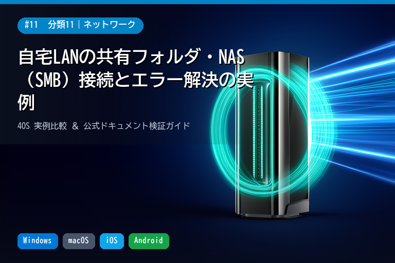

#11｜分類11: ネットワーク・サーバー・インフラ構築 2026-11-23

自宅LANの共有フォルダ・NAS（SMB）接続とエラー解決の実例｜Windows・macOS・iOS・Android
「自宅にNASを導入したけれど、スマホやPCからうまく繋がらない」「機種ごとに接続方法が違って混乱する」といった悩みをお持ちではありませんか？
自宅のデータを一元管理するNAS（Network Attached Storage）は非常に便利ですが、OSごとに操作手順や認証の仕組みが異なるため、初期設定でつまずくケースは非常に多いです。この記事では、主要な4つのOS（Windows, macOS, iOS, Android）におけるSMB接続の手順と、初心者が陥りやすいエラーへの対処法を徹底解説します。
この記事を読めば、どのデバイスからでもスムーズに自宅の共有フォルダへアクセスできるようになります。
4OS比較早見表
| OS | 標準アプリ / 操作場所 | 接続用プロトコル | 特徴・注意点 |
|---|---|---|---|
| Windows 11 | ファイルエクスプローラー | SMB (v2/v3) | 最も標準的な操作。ネットワークドライブとして固定可能。 |
| macOS | Finder (Command+K) | SMB (v2/v3) | キーチェーンによるパスワード管理が強力。 |
| iOS | 「ファイル」アプリ | SMB (v2/v3) | iCloudとは独立した「手動接続」のストレージとして動作。 |
| Android | Files by Google / 各社純正 | SMB (v2/v3) | 機種により標準アプリが異なるため、設定場所に注意。 |
1. Windows 11 での実例手順
Windowsは最も一般的な接続環境です。エクスプローラーから直接パスを入力する方法が最も確実です。
【操作手順】
1. ファイルエクスプローラーを開きます。
2. 上部の「アドレスバー」をクリックし、以下の形式で入力してEnterキーを押します。
- 入力例：\\192.168.0.5\Public（※NASのIPアドレスと共有フォルダ名）
3. 認証: パスワード保護が有効な場合、ユーザー名とパスワードを求められます。ここで入力するのは「Windowsのログイン情報」ではなく、「NAS管理画面で作成したアカウント情報」です。
4. 保存: 接続できたフォルダを右クリックし、「ネットワークドライブの割り当て」を選択すると、マイコンピュータ内にドライブとして固定でき、次回からワンクリックでアクセス可能になります。
【標準機能の制限事項】
- 同期機能なし: WindowsのSMBコネクタは「ネットワークドライブ」としての動作であり、クラウドストレージのような自動同期（変更を常にバックグラウンドで反映する）機能は内蔵されていません。
- SMB 1.0 デフォルト無効化: セキュリティ上の理由から、古いNASで使用されるSMBv1は標準でオフになっています。古い機器と繋がらない場合はNAS側の設定確認が必要です。
【よくあるトラブルと解決法】
- 「ネットワーク位置」への追加が失敗する
- 原因: IPアドレスの入力ミスや、Windowsファイアウォールによるブロック。
- 解決: ブラウザで
http://[NAS_IP]にアクセスし、Web管理画面が開くか確認してください。開ける場合はIPは正しいです。ポート番号（通常445）が開放されているか再確認しましょう。 - 「ユーザー名とパスワードが間違っています」とエラー
- 原因: Windowsのローカルアカウントで認証しようとしている。
- 解決: NAS側の管理画面で、入力したユーザー名が存在するか、およびそのユーザーに共有フォルダへのアクセス権が付与されているかを確認してください。
- 「読み取り専用」または接続エラーが出る
- 原因: 暗号化方式（NTLMv2など）の不一致。
- 解決: NAS側の設定でSMBプロトコルを「SMB3」に固定するか、NAS側からWindowsクライアントへのアクセス制限を緩和する設定を行ってください。
2. macOS での実例手順
MacではFinderの「サーバへ接続」機能を使用するのが最も標準的な方法です。
【操作手順】
1. Finderを開きます。
2. メニューバーの「移動」→「サーバへ接続」を選択（または Command + K）。
3. サーバアドレスに以下を入力します。
- 入力例：smb://192.168.0.5/Public
4. 認証: ダイアログが表示されたら、NASに登録したアカウント情報を入力します。
【標準機能の制限事項】
- 自動同期・バックアップなし: Finder経由の接続は単なるネットワークドライブです。Time Machineのバックアップ先として使う場合は、システム設定の「共有」から別途サーバー登録が必要です。
- ファイルロック競合: 複数ユーザーが同時に同じファイルを編集しようとすると、SMBの仕様上、保存エラーが発生することがあります。
【よくあるトラブルと解決法】
- 「接続できません」と表示され続ける
- 原因: macOSのセキュリティ強化により、古い暗号化方式や匿名アクセスがブロックされている。
- 解決: NAS側で「ゲストアクセス」をオフにし、必ず正しいユーザー名とパスワードを設定してください。
- 「ユーザー名とパスワードが間違っています」
- 原因: macOSの「キーチェーン」に古い（または誤った）認証情報がキャッシュされている。
- 解決: 「システム設定」→「一般」→「キーチェーンアクセス」を開き、NASのIPアドレスに関連する項目を削除してから再試行してください。
- 「読み取り専用」と表示される
- 原因: macOS側の権限設定や、NAS側のACL（アクセス制御リスト）で書き込み権限が与えられていない。
- 解決: NASの管理画面で、該当ユーザーに「フルコントロール」または「読み書き」の権限が付与されているか確認してください。
3. iOS（iPhone / iPad）での実例手順
iPhoneやiPadでは、標準の「ファイル」アプリを使ってNASをマウントします。
【操作手順】
1. 「ファイル」アプリを開きます。
2. 下部の「ブラウズ」タブで、右上の「…」ボタン（または共有ボタン）をタップし、「サーバへ接続」を選択。
3. サーバーアドレスに以下を入力します。
- 入力例：smb://192.168.0.5/Public
4. 認証: NASのアカウント情報を入力します。
【標準機能の制限事項】
- 同期・バックアップ不可: iCloud Driveとは別枠のストレージとして扱われます。ファイルを移動させるには手動操作が必要です。
- Time Machine 非対応: iOSデバイスからNASへTime Machineバックアップを直接行うことはできません。
【よくあるトラブルと解決法】
- 「サーバーに接続できません」
- 原因: Wi-Fiのプライバシー設定や、IPv6環境でのアドレス不一致。
- 解決: Wi-Fi設定で「プライベートアドレス」をオフにするか、IPアドレスが正しいか再確認してください。また、WebDAVプロトコル対応NASであれば、
http://[IP]/webdavを試すのも有効です。 - 「ユーザー名とパスワードが間違っています」
- 原因: セッションタイムアウトや古い情報の自動入力。
- 解決: 一度接続を解除し、アプリを再起動してから再度手動で情報を入力してください。
- 「読み取り専用」
- 原因: iOSのセキュリティ仕様による書き込み制限。
- 解決: NAS側のSMB設定でアクセス制御を緩和するか、どうしても書き込めない場合はサードパーティ製のファイル管理アプリ（FileBrowser等）の導入を検討してください。
4. Android での実例手順
Androidはメーカーや機種によって標準アプリが異なりますが、Google純正の「Files by Google」や各社独自の「マイファイル」で対応可能です。
【操作手順】
1. 「Files by Google」（または端末固有のエクスプローラー）を開きます。
2. 「ネットワークストレージ」または「SMB」項目を探し、「新しいサーバーを追加」をタップ。
3. サーバーアドレスに smb://[NAS_IP アドレス]/共有フォルダ名 を入力します。
4. 認証: NASのアカウント情報を入力します。
【標準機能の制限事項】
- 機種依存性大: Samsung GalaxyやSony Xperiaなど、メーカー独自のファイルマネージャーを使用する場合、SMB接続のUIや設定項目が大きく異なることがあります。
- バックグラウンド動作: アプリを閉じると接続が切断される挙動があるため、常に接続を維持したい場合はアプリを常駐させる必要があります。
よくあるトラブルと解決チェックリスト
ネットワーク接続でつまずいたときは、以下の順で確認してください。
- [ ] IPアドレスの再確認: NASの電源を入れ直し、管理画面から現在のIPアドレス（例: 192.168.x.x）を正確に取得しているか？
- [ ] 同一ネットワークの確認: 操作するデバイスが、NASと同じルーターに接続されているか？（ゲストWi-Fiなど、隔離されたネットワークではないか？）
- [ ] ユーザー権限の再付与: NAS側で「そのユーザー」に対して「そのフォルダ」へのアクセス許可を与えているか？
- [ ] プロトコルの互換性: NASの設定でSMBv2またはSMBv3が有効になっているか？（古いNASの場合、設定変更が必要なことがあります）
まとめ：快適なマルチOS環境を作るポイント
自宅のLAN環境を快適に保つためには、単に「繋がる」だけでなく、「安定して高速にアクセスできる」環境作りが重要です。
スムーズなファイル転送を実現するためには、以下の周辺機器の見直しも効果的です。
- Wi-Fi 6/6E/7ルーター: 多数のデバイスを同時に接続しても速度を落とさず、低遅延でNASへアクセスできます。
- 家庭用NAS: 外付けHDDをPCに繋ぐよりも、専用のNAS（SynologyやQNAPなど）を導入することで、OSを問わず安定したSMB接続が可能になります。
- LANケーブル & スイッチングハブ: NAS本体はWi-Fiではなく、必ずLANケーブルでルーター/スイッチングハブに有線接続してください。これにより、ワイヤレス環境での速度低下や切断トラブルを劇的に減らすことができます。
正しい設定と適切なインフラ整備を行うことで、WindowsでもMacでもスマホでも、家中どこからでも自由自在にデータへアクセスできる快適な環境が手に入ります。
参考文献・公式ドキュメント（一次情報ソース）
本記事の手順・仕様は以下の各OSおよびツールの公式ドキュメントに基づいています。OSアップデートによりメニュー名称や挙動が変わる場合があるため、最新仕様の確認にもご活用ください。